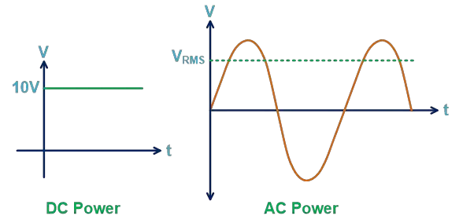
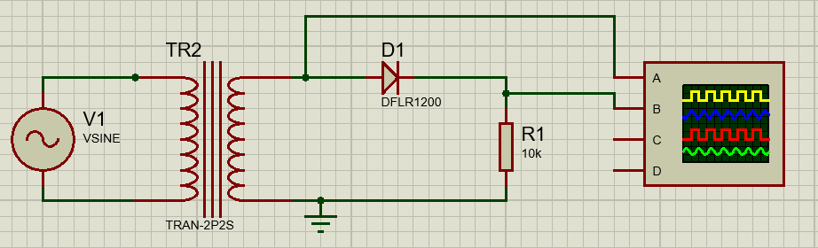

RMS VOLTAGE#
Author : Seyedeh Saba Ebrahimi Mousavi
contact : sa7590325@gmail.com
Table of contents#
1. Introduction#
2. Methods for Calculating RMS Voltage#
3. RMS, Peak, Peak-to-Peak, and Average Voltages#
4.Diffrent waveform#
5. Example#
6. Conclusion#
7. Sources#
Introduction#
1.1 Overview of RMS Voltage#
The word RMS stands for Root Mean Square. An RMS voltage is defined as the square root of the mean square of instantaneous values of the voltage signal. The RMS is also known as the quadratic mean. RMS voltage can also be defined for a continuously varying voltage in terms of an integral of the squares of the instantaneous values during a cycle.The symbols used for defining an RMS value are \(V_{RMS}\) or \(I_{RMS}\).
Most books define this as the “amount of AC power that produces the same heating effect as an equivalent DC power”, or something similar along these lines, but an RMS value is more than just that.
The term RMS, ONLY refers to time-varying sinusoidal voltages, currents or complex waveforms where the magnitude of the waveform changes over time and is not used in DC circuit analysis or calculations where the magnitude is always constant.
Therefore, the instantaneous value of voltage cannot directly be used for the calculation.
When used to compare the equivalent RMS voltage value of an alternating sinusoidal waveform that supplies the same electrical power to a given load as an equivalent DC circuit, the RMS value is called the “effective value” and is generally presented as: \(V_{eff}\) or \(I_{eff}\).
If we measure the city’s electricity with a DC voltmeter, it will show zero because it displays the average of the sine function. However, if we use an AC voltmeter, it will show 220 volts. The voltage amplitude is 310 volts, meaning it oscillates between 310 and -310 volts.(\(V=310sin(100\pi t)\)) But the voltmeter displays 220 volts.
In other words, the effective value is an equivalent DC value which tells you how many volts or amps of DC that a time-varying sinusoidal waveform is equal to in terms of its ability to produce the same power and same heating effect.
The RMS voltage is known as the equivalent DC voltage because the RMS value gives the amount of AC power drawn by a resistor similar to the power drawn by a DC source.
Consider a 5Ω load connected to a 10V DC source; here, the voltage remains constant, simplifying power calculation to 20W.
But instead of a DC source, say we use an AC source. In this condition, the value of voltage is varying with respect to time, as shown in the figure below.

1.3 Applications of RMS Voltage#
Electronic engineers use RMS values to design and analyze electronic circuits. Ensuring that devices like oscillators and amplifiers etc.
RMS voltage is used in finding the heating effect of an AC current in resistive elements such as in stovetops or electric heaters.
In electric motors, the RMS voltage is plays a major role for finding the RMS voltage that contributes to the motors mechanical power output.
RMS voltage is used for finding the luminosity or brightness of the light produced.
RMS values are also used for audio engineers for designing and analyzing components such as speakers, microphones and amplifiers to provide optimal sound quality.
In Telecommunication, RMS values are used to design and study the systems like telephone networks and data networks.
Methods for Calculating RMS Voltage#
RMS Voltage Equivalent
RMS values are calculated for waveforms that vary over time.
We cannot find the RMS value for the DC waveform as the DC waveform has a constant value for every instant of time.
RMS value can be calculated using two methods.
Graphical Method – which can be used to find the RMS value of any nonsinusoidal time-varying waveform by drawing a number of mid-ordinates onto the waveform.
Analytical Method – is a mathematical procedure for finding the effective or RMS value of any periodic voltage or current using calculus.
2.1 Graphical Method
In this method, we use a waveform to find the RMS value. The graphical method is more useful when the signal is not symmetrical or sinusoidal.
The accuracy of this method hinges on the number of points sampled from the waveform—more points yield higher accuracy.
The RMS value is a square root of the average value of the squared function. For example, let’s take a sinusoidal waveform of voltage as shown below figure.
Follow these steps to calculate the RMS voltage by graphical method.
Step-1: Divide waveform into equal parts. Here, we consider the half cycle of the waveform. You can consider full-cycle also.
The first half cycle divides into ten equal parts; V1, V2, …, V10.
Step-2: Find square of each value. $\(V_1^2, V_2^2, V_3^2, …, V_{10}^2\)$
Step-3: Take the average of these squared values. Find the total of these values and divide by the total number of points.
Step-4 Now, take square root of this value.
These steps are same for all type of continuous waveforms.
For different types of time-varying signals like triangular, square; these steps follow to find the RMS voltage.
Let’s solve these steps with an example.
Find the RMS value of the waveform shown in the figure below. Consider a pure sinusoidal wave of voltage.
Step-1: First half-cycle divides into ten equal parts. And the values of these parts are as shown in the figure.
Step-2: Find a Square of each point.
\(Angle\) |
\(18^\circ\) |
\(36^\circ\) |
\(54^\circ\) |
\(72^\circ\) |
\(90^\circ\) |
\(108^\circ\) |
\(126^\circ\) |
\(144^\circ\) |
\(162^\circ\) |
\(180^\circ\) |
|---|---|---|---|---|---|---|---|---|---|---|
\(Voltage\) |
6.2 |
11.8 |
16.2 |
19 |
20 |
19 |
16.2 |
11.8 |
6.2 |
0 |
\(Voltage^2\) |
38.44 |
139.24 |
262.44 |
361 |
400 |
361 |
262.44 |
139.24 |
38.44 |
0 |
Step-3: Take average of squared values.
Step-4: Find square root.
2.2 Analytical Method
The graphical method above is a very good way of finding the effective or RMS voltage, (or current) of an alternating waveform that is not symmetrical or sinusoidal in nature. In other words the waveform shape resembles that of a complex waveform.
However, when dealing with pure sinusoidal waveforms we can make life a little bit easier for ourselves by using an analytical or mathematical way of finding the RMS value.
A periodic sinusoidal voltage is constant and can be defined as \(V(t) = V_{m}cos(ωt)\) with a period of \(T\).where, \(V_{m}\) is the maximum amplitude and \(ω\) is the angular frequency(\(ω=2Лf\)).Then we can calculate the root-mean-square (rms) value of a sinusoidal voltage (V(t)) as:
RMS, Peak, Peak-to-Peak, and Average Voltages#
Peak Voltage
Peak voltage is defined as the maximum value of voltage for any voltage waveform. The peak value measures from the reference axis (0) to the highest point of the waveform.
If we consider a sinusoidal waveform, the value of voltage increases from the reference axis and reaches the peak point of the waveform on the positive side. The difference between these two points gives us the positive peak voltage.
From the peak point, the voltage starts decreasing and reaches to reference axis. After that, it starts increasing on the negative side and reaches the peak point. This point is a negative peak point.

We can calculate peak voltage from the RMS voltage, peak-to-peak voltage, and average voltage.
Peak Voltage From RMS Voltage:
To calculate the peak voltage from RMS voltage, we need to multiply RMS voltage by an approximate factor of 1.414.
Peak Voltage From Peak-to-Peak Voltage:
The peak voltage is half of the peak-to-peak voltage.
Peak Voltage From Average Voltage:
To calculate the peak voltage from average voltage, we need to multiply the average voltage by an approximate factor of 1.57.
Peak-to-Peak Voltage
Peak-to-peak voltage is a difference between positive peak voltage and negative peak voltage.
For a sinusoidal waveform, peak-to-peak voltage is shown below figure.
We can calculate Peak-to-peak voltage from the RMS voltage, peak voltage, and average voltage.
Peak-to-Peak Voltage From RMS Voltage:
To calculate peak-to-peak voltage from RMS voltage, 2.8284 is the approximate multiplier factor.
Peak-to-Peak Voltage From Peak Voltage:
Peak-to-peak voltage is twice of the peak voltage.
Peak-to-Peak Voltage From Average Voltage:
To calculate peak-to-peak voltage from RMS voltage, 3.14 (π) is the approximate multiplier factor.
Average Voltage
The method to find the average voltage is similar to the RMS voltage. The only difference is that the instantaneous values are not squared function and do not make square root.
The average value gives us the horizontal line. And the area above the horizontal line is the same as the area below the horizontal line. It is also known as means voltage.
The average voltage (or current) of a periodic waveform whether it is a sine wave, square wave or triangular waveform is the equivalent to the DC value of an alternating waveform. The average or mean value is defined as: “the quotient of the area under the waveform with respect to time“. In other words, the averaging of all the instantaneous values along time axis with time being one full period, (T).
For a periodic waveform, the area above the horizontal axis is positive while the area below the horizontal axis is negative. The result is that the average or mean value of a symmetrical alternating quantity over the full 360o time period is therefore zero, (0).
This is because the area above the horizontal axis (the positive half cycle) is the same as the area below the axis (the negative half cycle) and thus cancel each other out. In other words, when we do the maths of the two areas, the negative area cancels out the positive area producing a zero average value.
Then the average or mean value of a symmetrical alternating quantity, such as a sine wave, is taken over the time period of only one half of a cycle, since as we have just stated, the average value over one complete cycle is zero regardless of the peak amplitude.
By using The Analytical Method and knowing \(T=\pi\) : $\(V_{AVG} =\frac{1}{\pi} \int_{0}^{\pi} V_{m} sin(ωt) dt \)\( \)\(V_{AVG} =\frac{V_{m}}{\pi} (-cos(ωt))_0^\pi \)\( \)\(V_{AVG} =\frac{2V_{m}}{\pi}\)\( \)\(V_{AVG} =0.637 V_{m}\)$
We can calculate the average voltage from the RMS voltage, peak voltage, and peak-to-peak voltage.
Average Voltage From RMS Voltage:
To calculate the average voltage from RMS voltage, 0.9 is the approximate multiplier factor.
Average Voltage From Peak Voltage:
We calculate the average voltage from peak voltage, 0.637 is the approximate multiplier factor.
Average Voltage From Peak-to-Peak Voltage:
To calculate the average voltage from peak-to-peak voltage, 0.318 is the approximate multiplier factor.
Diffrent waveform#
Triangular wave
When plotted as voltage (V) as a function of phase (θ), a triangle wave looks similar to the figure below. One full cycle is shown here. The basic equation for a triangle wave is as follows:

RMS voltage for triangular wave :
average voltage for triangular wave :
The results obtained for triangular wave are also valid for saw tooth wave.
Even though both waveforms have the same formula for average voltage and rms voltage when considering their full period, their actual waveform shapes and applications can differ significantly. The triangle wave rises and falls symmetrically, while the sawtooth wave rises linearly and then drops sharply.
Square wave
When plotted as voltage (V) as a function of phase (θ), a square wave looks similar to the figure below. One full cycle is shown here. The basic equation for a square wave is as follows:
RMS voltage for square wave :
average voltage for square wave :
In section 2(Methods for Calculating RMS Voltage), we examined the RMS voltage for the sine wave/cosine wave And the result is as follows:
Half Wave rectifier theory A half wave rectifier clips the negative half cycles and allows only the positive half cycles to flow through the load. Thus it utilizes only the one-half cycle of the input signal.
halfwave rectifier, rectifier circuit
During the positive half cycle (A- Positive & B- Negative) of the signal, the diode will be forward biased and conducts the current through the load resistance. And on negative half cycle (A- Negative & B- Positive), the diode will be reverse biased and prevents the current to flow in the opposite direction. So the polarity of the output terminals keeps unchanged and obtains a unidirectional current through the load.
In a half wave rectifier, the negative half cycle will be removed from the output. So, the total base length(2π) should be taken from the interval 0 to 2π.
average voltage of half-wave rectified sin wave :
We implemented the above circuit in Proteus to see the output waveform:

Full Wave rectifier theory It converts the complete cycles of the AC signal to DC. Both positive and negative half cycles of the AC signal is converted to a unidirectional flow of current.
Full wave center tap rectifier circuit
center tap rectifier circuit, full wave center tap rectifier circuit diagram
A center tapped full wave rectifier works only with a center tap transformer or with a similar common potential point across the terminals. The center tap act as a common zero potential terminal in both half cycles.
On the positive half cycle (A- Positive & B- Negative), the diode D1 is forward biased and diode D2 is in reverse biased. Hence the current flow through D1 and the load resistance, from terminal A to center tap.
On the negative half cycle (A- Negative & B- Positive), the diode D2 is forward biased and diode D1 is reverse biased. Current flows through D2 and load resistance, from the B terminal to the center tap of the transformer.
The biasing of diodes changes alternately with respect to change in the polarity of terminals.
In the center tap rectifier, the output DC voltage will be half of the total output voltage of the secondary winding. Because the load is always on half of the secondary winding.
Full Wave Bridge Rectifier circuit
bridge rectifier circuit, full wave rectifier circuit diagram
The bridge rectifier consists of 4 diodes in a bridge circuit configuration. From a center tap rectifier, the bridge rectifier has a difference only in the circuit arrangement. The efficiency, ripple factor, average value, RMS value all are same except the transformer utilisation factor(TUF). Because in a center tap rectifier the transformer winding should consider separately.
The bridge rectifier has an advantage over the center tap, that is it works without a center tapped transformer or a common ground.
On the positive half cycle, (A- Positive & B- Negative) diode D2 & D4 are in forward biased. D1 & D3 are in reverse biased, thus the conduction path forms through diode D2, load resistance, and diode D3.
Similarly, on the negative half cycle (A- Negative & B- Positive) diode D4 & D1 is in forward biased. Diode D3 & D1 are in reverse biased. Current flows through D4, load resistance and D2.
The biasing of the diodes alternates in each half cycle and creates a same polarity across the load. Hence, in both half cycles the load resistance has the same direction of the current.
\(T\) for Full-wave rectified sine wave is equal to \(Л\) .
average voltage of full-wave rectified sin wave :
We implemented the Full wave center tap rectifier circuit in Proteus to see the output waveform:
And for Full Wave Bridge Rectifier circuit we have :
In short, we have :
Example#
Calculating AC Waveform: Calculate the average and peak voltage of a sinusoidal AC with 5 amps flowing through a 50Ω resistance.
The RMS voltage is determined by the formula:
Mode |
Voltage (V) |
Current (A) |
Power Loss (W) |
|---|---|---|---|
DC |
250 |
5 |
1250 |
AC |
353 (peak) |
5(RMS) |
~1250 (RMS) |
import schemdraw
import schemdraw.elements as elm
with schemdraw.Drawing() as d:
# AC voltage source
d += elm.SourceSin().label('AC Source (V)')
d += elm.Line().right()
# Resistor
d += elm.Resistor().down().label('50 Ω',loc='bot')
# Current label
d += elm.Line().left().label('I = 5 A (RMS)', loc='bot')
d.draw()
with schemdraw.Drawing() as dc:
# voltage source
dc += elm.SourceV().label('Source (V_rms = 250V)')
dc += elm.Line().right()
# Resistor
dc += elm.Resistor().down().label('50 Ω',loc='bot')
# Current label
dc += elm.Line().left().label('I = 5 A (RMS)', loc='bot')
dc.draw()
from PySpice.Spice.Netlist import Circuit
from PySpice.Unit import *
import matplotlib.pyplot as plt
import numpy as np
from scipy.integrate import simpson as simps # Simpson's rule for integration
# Parameters
dc_voltage = 250 # DC source voltage (V)
ac_peak_voltage = 353 # AC peak voltage (V)
resistor_value = 50 # Resistor value (ohms)
frequency = 50 # Frequency of AC source (Hz)
simulation_time = 0.1 # Duration of simulation (s)
time_step = 1e-3 # Time step for simulation
# ----------------- Define DC Circuit ----------------- #
circuit_dc = Circuit('DC Circuit')
circuit_dc.V(1, '1', circuit_dc.gnd, dc_voltage@u_V) # DC voltage source
circuit_dc.R(1, '1', circuit_dc.gnd, resistor_value@u_Ω) # Resistor
# Simulate DC circuit
simulator_dc = circuit_dc.simulator(temperature=25, nominal_temperature=25)
analysis_dc = simulator_dc.operating_point()
# Extract DC values
voltage_dc = float(analysis_dc['1']) # Voltage across resistor
current_dc = voltage_dc / resistor_value # Current through resistor
power_dc = voltage_dc * current_dc # Power loss in resistor
# ----------------- Define AC Circuit ----------------- #
circuit_ac = Circuit('AC Circuit')
circuit_ac.SinusoidalVoltageSource(1, '1', circuit_ac.gnd, amplitude=ac_peak_voltage@u_V, frequency=frequency@u_Hz)
circuit_ac.R(1, '1', circuit_ac.gnd, resistor_value@u_Ω)
# Simulate AC circuit
simulator_ac = circuit_ac.simulator(temperature=25, nominal_temperature=25)
analysis_ac = simulator_ac.transient(step_time=time_step, end_time=simulation_time)
# Extract AC values
time = np.array(analysis_ac.time)
voltage_ac = np.array(analysis_ac['1'])
current_ac = voltage_ac / resistor_value # Current through resistor
power_ac = voltage_ac * current_ac # Instantaneous power loss
# Calculate the average power of the AC graph using Simpson's rule
average_power_ac = simps(y=power_ac, x=time) / (time[-1] - time[0]) # Integrate and divide by total time
# ----------------- Plot Results ----------------- #
plt.figure(figsize=(10, 6))
# Plot Instantaneous Power Loss for AC
plt.plot(time, power_ac, label='AC Power Loss (W)', color='red')
# Plot Power Loss for DC as a Constant Line
plt.axhline(y=power_dc, color='blue', linestyle='--', label=f'DC Power Loss: {power_dc:.2f} W')
# Plot Average AC Power Loss
plt.axhline(y=average_power_ac, color='green', linestyle='-.', label=f'AC Average Power: {average_power_ac:.2f} W')
# Add Titles and Labels
plt.title('Power Loss in Resistor: DC vs AC Source')
plt.xlabel('Time (s)')
plt.ylabel('Power Loss (W)')
plt.legend()
plt.grid()
plt.show()
# ----------------- Print Results ----------------- #
print(f"DC Power Loss: {power_dc:.2f} W")
print(f"AC Average Power Loss (Integral Method): {average_power_ac:.2f} W")
---------------------------------------------------------------------------
ModuleNotFoundError Traceback (most recent call last)
Cell In[2], line 1
----> 1 from PySpice.Spice.Netlist import Circuit
2 from PySpice.Unit import *
3 import matplotlib.pyplot as plt
ModuleNotFoundError: No module named 'PySpice'
This PySpice analysis pertains to the circuits illustrated above. The AC power analysis is represented by the red curve, showing the instantaneous power loss over time. The DC power analysis, on the other hand, is depicted as a blue dashed line, indicating a constant power loss. To verify the equivalence, the average power for the AC analysis was calculated using numerical integration and is also included in the plot.(\(P_{avg}=\frac{1}{T}\int_{0}^{T} P(t) dt\)) As anticipated, the average power of the AC source closely aligns with the DC power, highlighting the consistency of power calculations between the two modes. As we mention earlier RMS voltage is known as the equivalent DC voltage because the RMS value gives the amount of AC power drawn by a resistor similar to the power drawn by a DC source.
Conclusion#
The RMS value is important in analyzing AC circuits because it represents the effective or equivalent DC value of an AC signal. This allows us to apply DC analysis techniques to AC circuits, simplifying calculations and analysis. It also enables us to compare AC and DC circuits directly, facilitating a better understanding of their behavior.
Sources#
1.https://www.electronics-tutorials.ws/accircuits/rms-voltage.html
2.https://en.wikipedia.org/wiki/Root_mean_square
3.https://www.electrical4u.com/rms-or-root-mean-square-value-of-ac-signal/#What-is-RMS-Voltage
5.https://www.geeksforgeeks.org/rms-voltage/#applications-of-rms-voltage
7.https://www.omnicalculator.com/physics/rms-voltage#how-to-use-the-rms-voltage-calculator
8.https://electronics-formulas.com/how-to-calculate-ac-waveform/
9.https://mechatrofice.com/circuits/rectifier-half-wave-full-wave
10.https://www.rfcafe.com/references/electrical/triangle-wave-voltage-conversion.htm
11.https://www.rfcafe.com/references/electrical/square-wave-voltage-conversion.htm
12.https://www.electronics-tutorials.ws/accircuits/average-voltage.html